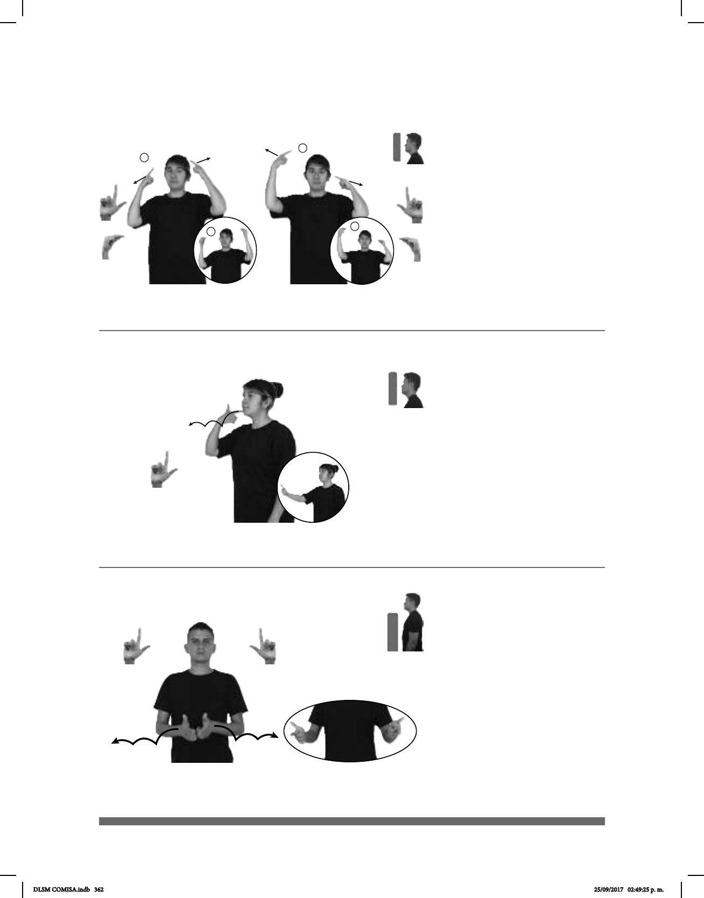

362
Seña: SS
Seña que pasa de
Palmas oblicuas hacia
el centro y hacia adentro.
A la altura de las sienes.
Los dedos índice y
pulgar se tocan y se separan.
1. v. prnl. Obtener un
nivel de escolaridad o rango
superior al que se tenía. 2. sust. f.
Acto de obtener o recibir un grado
ciclo escolar.
Seña: SM
L.1
Palma hacia adentro.
La mano inicia sobre la
barbilla y termina a la altura del
pecho.
La mano simula varios
saltos hacia el frente.
1. sust. f. Parte de la
lingüística que estudia la estructura y
las reglas de combinación de las
palabras de una lengua. 2. sust. f.
Conjunto de reglas y normas para
hablar y escribir correctamente una
lengua.
Seña: SS
L.1
Las palmas se encuentran
frente a frente.
A la altura del pecho.
Las manos parten de un
mismo punto y luego se abren hacia los
lados siguiendo una trayectoria de
saltos.
1. sust. f. Parte de la
lingüística que estudia la estructura y las
reglas de combinación de las palabras
de una lengua. 2. sust. f. Conjunto de
reglas y normas para hablar y escribir
correctamente una lengua.
(L-65)
(L-64)
1
2
(L-66)
SEMANA PASADA GRADUACIÓN YA
La graduación fue la semana pasada.
LUGAR ESCUELA pro-NOSOTROS APRENDER GRAMÁTICA
Nosotros aprendemos gramática en la escuela.
LUGAR ESCUELA pro-NOSOTROS APRENDER GRAMÁTICA
Nosotros aprendemos gramática en la escuela.
DLSM COMISA.indb 362 25/09/2017 02:49:25 p. m.